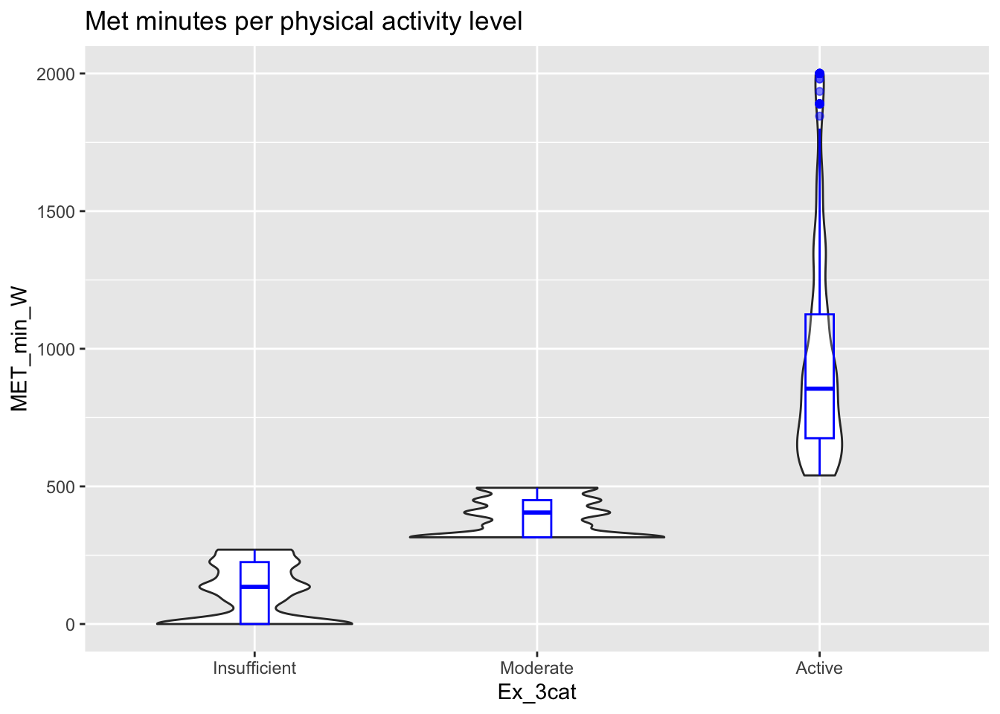
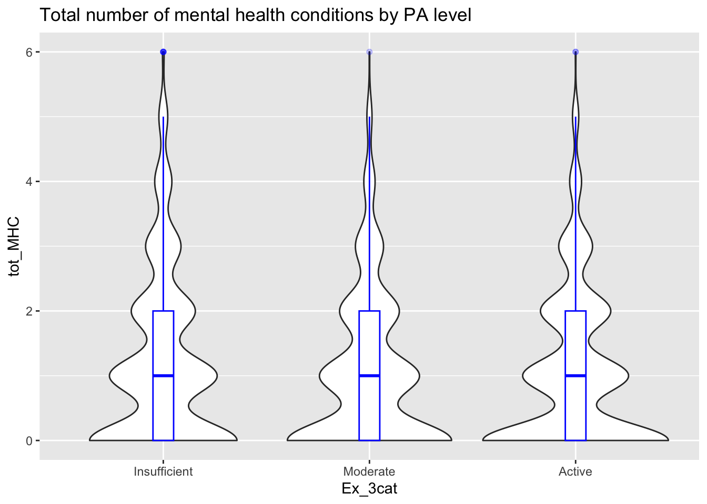
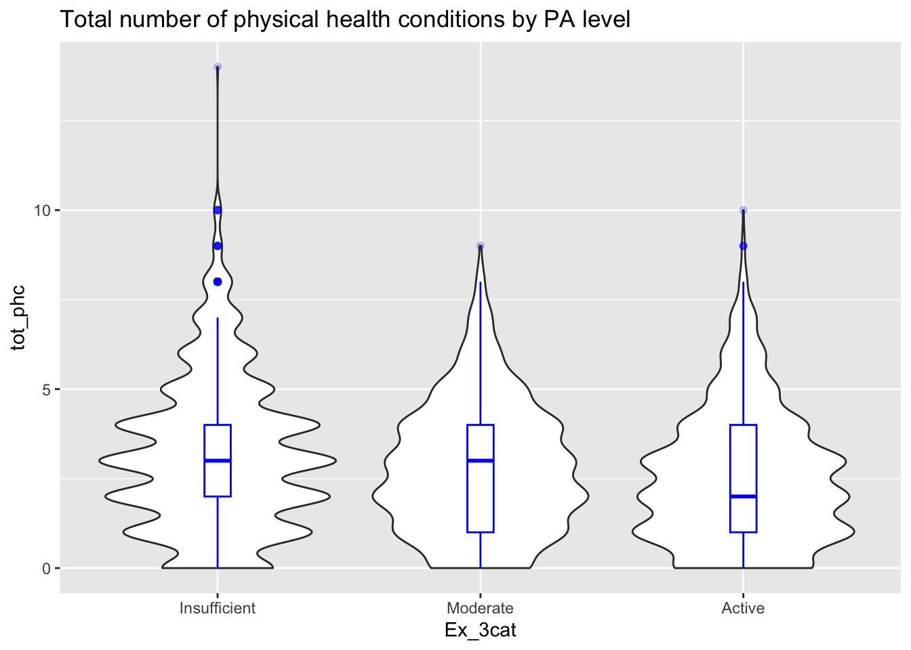
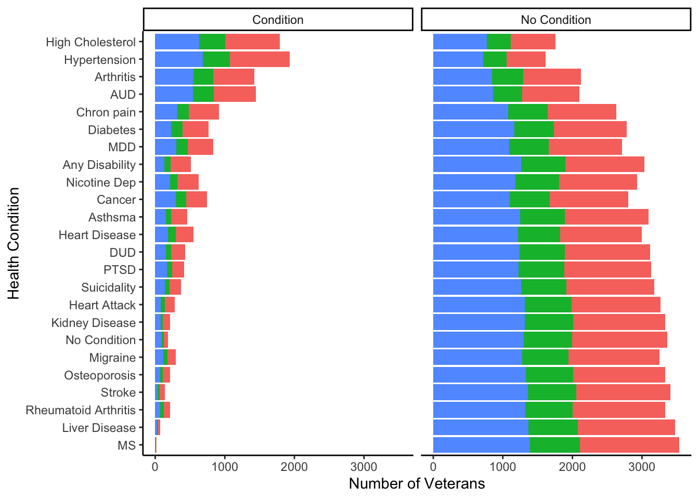

The following code will show you the preliminary statistics ran before conducting regression analyses. This page includes:
options(knitr.table.format = "html")
#data stuff
library(tidyverse)
library(dplyr)
#CSV/CAV files
library(haven)
library(tableone)
#regression stuff
library(aod)
library(gtsummary)
library(lmtest)
library(DescTools)
library(manipulate)
library(psych)
library(tableone)
library(kableExtra)### Import dataset
NHRVS_2019 <- read_sav("~/Desktop/Adams_lab/SPSS_stuff/NHRVS_2019_2020_FINAL_weighted.sav")
### Select and rename Variables
thesis_NHRVS <- dplyr::select(NHRVS_2019,
#Background Variables __________
caseid,weight,Age,Male_Gender,White_Race,SomeCollege_or_Higher,
Married_Partnered,Income_60k_plus,YN_work,
PCS_FINAL,MCS_FINAL,Weight_kg,BMI,
#Military variables__________
Combat_Veteran,Years_in_Military,Branch_5cat,Enlistment_status_3cat,
MilitaryRank_3cat,
#Mental Health Variables___________
TOTAL_TRAUMAS,LT_PCL_33,LT_MDD_Sx_only,LT_Suicide_4cat,Suicide_Attempt_LT,
LT_Suicide_Plan,LT_AUD,LT_NicotineDep,LT_DUD,tot_MHC,Any_MHC,
#Physical health Variables_________
ANY_ADL_DISABILITY,ANY_IADL_DISABILITY,Any_Disability,tot_phc,Any_PHC,Q22A_1,Q22A_2,
Q22A_3,Q22A_4,Q22A_5,Q22A_6,Q22A_7,Q22A_8,Q22A_9,Q22A_10,Q22A_11,Q22B_1,
Q22B_2,Q22B_3,Q22B_4,Q22B_5,
#Exercise variables ___________
godin_mild_winsor,godin_Mod_winsor,godin_Stren_winsor,HCS,HCS_Cats,
godin_total_ac,god3cat,god2cat,GODIN_outliers)
#Rename variabes
thesis_NHRVS <- rename(thesis_NHRVS,
MET_total = godin_total_ac,
God_mild = godin_mild_winsor,
God_mod = godin_Mod_winsor,
God_stren = godin_Stren_winsor,
College = SomeCollege_or_Higher,
MCS = MCS_FINAL,
PCS = PCS_FINAL,
Arthritis = Q22A_1,
Athsma = Q22A_2,
Cancer = Q22A_3,
Chron_pain = Q22A_4,
Liv_dis = Q22A_5,
Diabetes = Q22A_6,
Hrt_dis = Q22A_7,
Hrt_atk = Q22A_8,
High_chol = Q22A_9,
High_bld_press = Q22A_10,
Kid_dis = Q22A_11,
Migrane = Q22B_1,
MS = Q22B_2,
Osteoporosis = Q22B_3,
Rhum_arth = Q22B_4,
Stroke = Q22B_5,
LT_MDD = LT_MDD_Sx_only,
LT_PTSD = LT_PCL_33
)thesis_NHRVS<- thesis_NHRVS %>%
# First Create all of the variables
mutate(thesis_NHRVS,
# Exercise variables
Ex_time = (God_mild + God_mod + God_stren)*15,
# Tells us how long people exercised for.
MET_min = MET_total* 15,
MET_min_W = ifelse(MET_min > 2000, 2000, MET_min),
# Total METs per week times the duration of exercise
Ex_rec = as.factor(ifelse(MET_min >= 500, "Sufficient", "Insufficient")),
# Meeting activity levels (i.e., sufficient vs insufficient)
Ex_3cat = as.factor(ifelse(MET_min < 290, 1,
ifelse(MET_min < 500 & MET_min >= 290, 2,3))),
Ex_4cats = as.factor(ifelse(MET_min < 290, "Sed",
ifelse(MET_min < 500 & MET_min >= 290, "Mod",
ifelse(MET_min < 1000 & MET_min >= 500, "Active",
ifelse(MET_min < 2000 & MET_min >= 1000, "Super", NA))))),
# 3 godin (HCS) categories converted to MET_min
# Other Variables
HCS_win = (God_mod*5) + (God_stren*9),
HCS3cat = as.factor(ifelse(HCS_win < 14, "Insufficient",
ifelse(HCS_win < 24 & HCS_win >= 290, "Moderate", "Active"))),
Yr5_Military = as.factor(ifelse(Years_in_Military >= 5, "5+", "<5")),
Active_PA = as.factor(ifelse(Ex_3cat == 3,1,0)),
Moderate_PA = as.factor(ifelse(Ex_3cat == 2,1,0)),
Insuf_PA = as.factor(ifelse(Ex_3cat == 2,1,0)),
Total_HC = Any_Disability + Arthritis + Cancer + Chron_pain + Liv_dis +
Diabetes + Hrt_dis + Hrt_atk + High_chol + High_bld_press +
Kid_dis + Migrane + MS + Osteoporosis + Rhum_arth + Stroke +
LT_MDD + LT_PTSD + LT_AUD + LT_DUD + LT_NicotineDep,
Total_PHC = Any_Disability + Arthritis + Cancer + Chron_pain + Liv_dis +
Diabetes + Hrt_dis + Hrt_atk + High_chol + High_bld_press +
Kid_dis + Migrane + MS + Osteoporosis + Rhum_arth + Stroke,
Total_MHC = LT_MDD + LT_PTSD + LT_AUD + LT_DUD + LT_NicotineDep,
No_Condition = ifelse(Any_MHC == 1 | Any_PHC ==1, 0,1)
) %>%
mutate(thesis_NHRVS,
#Physical health variables
Any_Disability = as.factor(Any_Disability),
Arthritis = as.factor(Arthritis),
Athsma = as.factor(Athsma),
Cancer = as.factor(Cancer),
Chron_pain = as.factor(Chron_pain),
Liv_dis = as.factor(Liv_dis),
Diabetes = as.factor(Diabetes),
Hrt_dis = as.factor(Hrt_dis),
Hrt_atk = as.factor(Hrt_atk),
High_chol = as.factor(High_chol),
High_bld_press = as.factor(High_bld_press),
Kid_dis = as.factor(Kid_dis),
Migrane = as.factor(Migrane),
MS = as.factor(MS),
Osteoporosis = as.factor(Osteoporosis),
Rhum_arth = as.factor(Rhum_arth),
Stroke = as.factor(Stroke),
Ex_3cat = as.factor(Ex_3cat),
Male_Gender = as.factor(Male_Gender),
Married_Partnered = as.factor(Married_Partnered),
White_Race = as.factor(White_Race),
College = as.factor(College),
Income_60k_plus = as.factor(Income_60k_plus),
YN_work = as.factor(YN_work),
Combat_Veteran = as.factor(Combat_Veteran),
Any_MHC = as.factor(Any_MHC),
Any_PHC = as.factor(Any_PHC),
god2cat = as.factor(god2cat),
#Mental health variables
LT_Suicide_4cat = as.factor(LT_Suicide_4cat),
LT_MDD = as.factor(LT_MDD),
LT_PTSD = as.factor(LT_PTSD),
LT_AUD = as.factor(LT_AUD),
LT_DUD = as.factor(LT_DUD),
LT_NicotineDep = as.factor(LT_NicotineDep)
#Create a non health condition variable
)%>%
mutate(thesis_NHRVS,
Ex_3cat = recode(Ex_3cat,
"1" = "Insufficient",
"2" = "Moderate",
"3" = "Active"),
Married_Partnered = recode(Married_Partnered,
"0" = "Married_Partnered",
"1" = "Single"),
Male_Gender = as.factor(Male_Gender),
Male_Gender = recode(Male_Gender,
"0" = "Female",
"1" = "Male"),
White_Race = recode(White_Race,
"0" = "Not_White",
"1" = "White"),
College = recode(College,
"0" = "No_Colege",
"1" = "Some_Colege"),
Income_60k_plus = recode(Income_60k_plus,
"0" = "Under_60k",
"1" = "OVer_60k"),
YN_work = recode(YN_work,
"1" = "No_Work",
"2" = "Working"),
Combat_Veteran = as.factor(Combat_Veteran),
Combat_Veteran = recode(Combat_Veteran,
"0" = "No_Combat",
"1" = "Combat"),
Any_MHC = recode(Any_MHC,
"0" = "No_con",
"1" = "MHC"),
Any_PHC = recode(Any_PHC,
"0" = "No_con",
"1" = "PHC"),
LT_Suicide_4cat = as.factor(LT_Suicide_4cat),
LT_Suicidal = recode(LT_Suicide_4cat,
"0" = "0",
"1" = "0",
"2" = "1",
"3" = "1"
))
#Filter out NA values
thesis_NHRVS <- thesis_NHRVS %>%
filter(!is.na(Ex_rec)) %>%
filter(!is.na(Ex_3cat)) %>%
filter(!is.na(MCS)) %>%
filter(!is.na(PCS)) %>%
filter(!is.na(BMI)) %>%
filter(!is.na(Any_Disability)) %>%
filter(!is.na(Arthritis)) %>%
filter(!is.na(Cancer)) %>%
filter(!is.na(Chron_pain)) %>%
filter(!is.na(Liv_dis)) %>%
filter(!is.na(Diabetes)) %>%
filter(!is.na(Hrt_dis)) %>%
filter(!is.na(Hrt_atk)) %>%
filter(!is.na(High_chol)) %>%
filter(!is.na(High_bld_press)) %>%
filter(!is.na(Kid_dis)) %>%
filter(!is.na(Migrane)) %>%
filter(!is.na(MS)) %>%
filter(!is.na(Osteoporosis)) %>%
filter(!is.na(Rhum_arth)) %>%
filter(!is.na(Stroke)) %>%
filter(!is.na(LT_MDD)) %>%
filter(!is.na(LT_PTSD)) %>%
filter(!is.na(LT_AUD)) %>%
filter(!is.na(LT_DUD)) %>%
filter(!is.na(LT_NicotineDep)) %>%
filter(!is.na(LT_Suicidal))
kable(thesis_NHRVS[1:10,1:8]) %>%
kable_styling(bootstrap_options = c("striped", "hover", "condensed"))| caseid | weight | Age | Male_Gender | White_Race | College | Married_Partnered | Income_60k_plus |
|---|---|---|---|---|---|---|---|
| 3592 | 2.6012 | 58 | Male | White | No_Colege | Single | Under_60k |
| 2182 | 0.2979 | 64 | Female | White | Some_Colege | Single | Under_60k |
| 1311 | 1.4863 | 54 | Male | Not_White | No_Colege | Married_Partnered | Under_60k |
| 2054 | 0.8510 | 56 | Male | White | Some_Colege | Married_Partnered | Under_60k |
| 1061 | 1.5495 | 58 | Male | Not_White | Some_Colege | Single | Under_60k |
| 138 | 0.6388 | 88 | Male | White | Some_Colege | Single | Under_60k |
| 825 | 0.6042 | 55 | Male | Not_White | Some_Colege | Single | Under_60k |
| 1971 | 1.0539 | 36 | Female | Not_White | Some_Colege | Single | Under_60k |
| 1199 | 0.5370 | 69 | Male | White | Some_Colege | Single | Under_60k |
| 3994 | 0.7778 | 64 | Male | White | Some_Colege | Married_Partnered | OVer_60k |
Now that we have a clean and prepped data file to analyze lets create a CSV of that for future reference.
write_csv(thesis_NHRVS, "~/Desktop/Coding/data/thesis_dataset.csv" )
haven::write_sav(thesis_NHRVS,"~/Desktop/Coding/data/thesis_SPSS.sav")Here are some discriptive statistics and basic plots to see an
overview of the data. I use table1() to run the descriptive
statistics.
# Physical activity level value (MET minutes)
#install.packages("table1")
desc_tab<-data.frame(table1::table1(~MET_min_W + tot_MHC + tot_phc | Ex_3cat, data=thesis_NHRVS))
knitr::kable(desc_tab) %>%
kable_styling(bootstrap_options = c("striped", "hover", "condensed"))| X. | Insufficient | Moderate | Active | Overall |
|---|---|---|---|---|
| (N=1427) | (N=724) | (N=1397) | (N=3548) | |
| MET_min_W | ||||
| Mean (SD) | 114 (98.2) | 390 (66.8) | 967 (389) | 506 (462) |
| Median [Min, Max] | 135 [0, 270] | 405 [315, 495] | 855 [540, 2000] | 360 [0, 2000] |
| tot_MHC | ||||
| Mean (SD) | 1.21 (1.33) | 1.02 (1.20) | 1.04 (1.22) | 1.11 (1.26) |
| Median [Min, Max] | 1.00 [0, 6.00] | 1.00 [0, 6.00] | 1.00 [0, 6.00] | 1.00 [0, 6.00] |
| tot_phc | ||||
| Mean (SD) | 3.15 (2.11) | 2.76 (1.80) | 2.53 (1.86) | 2.82 (1.98) |
| Median [Min, Max] | 3.00 [0, 14.0] | 3.00 [0, 9.00] | 2.00 [0, 10.0] | 3.00 [0, 14.0] |
#Plotting Met mins and Physical activity
ggplot(thesis_NHRVS, aes(x = Ex_3cat, y = MET_min_W)) +
geom_violin()+
geom_boxplot(width=0.1, color="blue", alpha=0.2)+
ggtitle("Met minutes per physical activity level")
# Total Mental health conditions
ggplot(thesis_NHRVS, aes(x = Ex_3cat, y = tot_MHC)) +
geom_violin()+
geom_boxplot(width=0.1, color="blue", alpha=0.2) +
ggtitle("Total number of mental health conditions by PA level")
# Total physical health conditions
ggplot(thesis_NHRVS, aes(x = Ex_3cat, y = tot_phc)) +
geom_violin()+
geom_boxplot(width=0.1, color="blue", alpha=0.2)+
ggtitle("Total number of physical health conditions by PA level") These descriptive are helpful for us to see how the data looks. Also it can be helpful to see what may be or not be wrong within the data
I wanted to create a visualiation that depicted the number of
veterans with or without health conditions within each physical activity
level. The following code uses xtabs() to run cross tab/
chi squares. I start by extracting the number of veterans, and then
convert the table into long data to plot the figure.
Extracting values from chi square tables.
#table with and without health conditions
AD_xtab2 <- xtabs(~Any_Disability +Ex_3cat,data = thesis_NHRVS)
xtable2 <- rbind(AD_xtab2,xtabs(~Athsma+Ex_3cat,data = thesis_NHRVS))
xtable2 <- rbind(xtable2,xtabs(~Arthritis+Ex_3cat,data = thesis_NHRVS))
xtable2 <- rbind(xtable2,xtabs(~Cancer+Ex_3cat,data = thesis_NHRVS))
xtable2 <- rbind(xtable2,xtabs(~Chron_pain+Ex_3cat,data = thesis_NHRVS))
xtable2 <- rbind(xtable2,xtabs(~Liv_dis+Ex_3cat,data = thesis_NHRVS))
xtable2 <- rbind(xtable2,xtabs(~Diabetes+Ex_3cat,data = thesis_NHRVS))
xtable2 <- rbind(xtable2,xtabs(~Hrt_dis+Ex_3cat,data = thesis_NHRVS))
xtable2 <- rbind(xtable2,xtabs(~Hrt_atk+Ex_3cat,data = thesis_NHRVS))
xtable2 <- rbind(xtable2,xtabs(~High_chol+Ex_3cat,data = thesis_NHRVS))
xtable2 <- rbind(xtable2,xtabs(~High_bld_press+Ex_3cat,data = thesis_NHRVS))
xtable2 <- rbind(xtable2,xtabs(~Kid_dis+Ex_3cat,data = thesis_NHRVS))
xtable2 <- rbind(xtable2,xtabs(~Migrane+Ex_3cat,data = thesis_NHRVS))
xtable2 <- rbind(xtable2,xtabs(~MS+Ex_3cat,data = thesis_NHRVS))
xtable2 <- rbind(xtable2,xtabs(~Osteoporosis+Ex_3cat,data = thesis_NHRVS))
xtable2 <- rbind(xtable2,xtabs(~Rhum_arth+Ex_3cat,data = thesis_NHRVS))
xtable2 <- rbind(xtable2,xtabs(~Stroke+Ex_3cat,data = thesis_NHRVS))
xtable2 <- rbind(xtable2,xtabs(~LT_AUD+Ex_3cat,data = thesis_NHRVS))
xtable2 <- rbind(xtable2,xtabs(~LT_DUD+Ex_3cat,data = thesis_NHRVS))
xtable2 <- rbind(xtable2,xtabs(~LT_MDD+Ex_3cat,data = thesis_NHRVS))
xtable2 <- rbind(xtable2,xtabs(~LT_PTSD+Ex_3cat,data = thesis_NHRVS))
xtable2 <- rbind(xtable2,xtabs(~LT_NicotineDep+Ex_3cat,data = thesis_NHRVS))
xtable2 <- rbind(xtable2,xtabs(~LT_Suicidal +Ex_3cat,data = thesis_NHRVS))
xtable2 <- rbind(xtable2,xtabs(~No_Condition+Ex_3cat,data = thesis_NHRVS))
xtable2<-data.frame(xtable2)
#create a varaible for diagnosis
xtable2$condition<- NA
diagnose<- c("No Condition","Condition")
xtable2$condition = diagnose
knitr::kable(xtable2[1:10,]) %>%
kable_styling(bootstrap_options = c("striped", "hover", "condensed"))| Insufficient | Moderate | Active | condition | |
|---|---|---|---|---|
| X0 | 1133 | 637 | 1264 | No Condition |
| X1 | 294 | 87 | 133 | Condition |
| X0.1 | 1199 | 645 | 1247 | No Condition |
| X1.1 | 228 | 79 | 150 | Condition |
| X0.2 | 830 | 444 | 847 | No Condition |
| X1.2 | 597 | 280 | 550 | Condition |
| X0.3 | 1131 | 577 | 1098 | No Condition |
| X1.3 | 296 | 147 | 299 | Condition |
| X0.4 | 992 | 563 | 1079 | No Condition |
| X1.4 | 435 | 161 | 318 | Condition |
Next I manually create a long dataset. I start by creating the variable names needed for the long dataset.
#2. Varaible names for table
var_names2 = c("Any Disability","Any Disability","Asthsma","Asthsma",
"Arthritis", "Arthritis",
"Cancer","Cancer",
"Chron pain","Chron pain",
"Liver Disease","Liver Disease",
"Diabetes","Diabetes",
"Heart Disease", "Heart Disease",
"Heart Attack", "Heart Attack",
"High Cholesterol", "High Cholesterol",
"Hypertension", "Hypertension",
"Kidney Disease", "Kidney Disease",
"Migraine", "Migraine",
"MS", "MS",
"Osteoporosis", "Osteoporosis",
"Rheumatoid Arthritis", "Rheumatoid Arthritis",
"Stroke","Stroke",
"AUD", "AUD",
"DUD","DUD",
"MDD", "MDD",
"PTSD", "PTSD",
"Nicotine Dep", "Nicotine Dep",
"Suicidality","Suicidality",
"No Condition", "No Condition")
#3. make long data frame (needed for plot)
condition_df2 <- var_names2
condition_df2 <- data.frame(condition_df2)
condition_df2[1:144,1] <- var_names2
condition_df2[1:48,2] <- xtable2$Insufficient
condition_df2[1:48,3] = "Insufficient"
condition_df2[49:96,2] <- xtable2$Moderate
condition_df2[49:96,3] <- "Moderate"
condition_df2[97:144,2] <- xtable2$Active
condition_df2[97:144,3] = "Sufficient"
condition_df2$Diagnosis = xtable2$condition
names(condition_df2) <- c("Variable","Value","Ex_3cat","Diagnosis")
knitr::kable(condition_df2[1:10,]) %>%
kable_styling(bootstrap_options = c("striped", "hover", "condensed"))| Variable | Value | Ex_3cat | Diagnosis |
|---|---|---|---|
| Any Disability | 1133 | Insufficient | No Condition |
| Any Disability | 294 | Insufficient | Condition |
| Asthsma | 1199 | Insufficient | No Condition |
| Asthsma | 228 | Insufficient | Condition |
| Arthritis | 830 | Insufficient | No Condition |
| Arthritis | 597 | Insufficient | Condition |
| Cancer | 1131 | Insufficient | No Condition |
| Cancer | 296 | Insufficient | Condition |
| Chron pain | 992 | Insufficient | No Condition |
| Chron pain | 435 | Insufficient | Condition |
Now that we have the data we can plot it! I use ggplot()
to plot the figure. As this is a bar chart I use geom_bar()
and use position="stack" to make the stacked bar chart. I
used fct_reorder() to order the chart in order of the
number of veterans reporting that condition. facet_grid()
was used to seperate the the number of veterans with and without
conditions into different figures. Lastly of note, I used
coord_flip() to put both of the figures on the Y axis.
ggplot(condition_df2, aes(fill=Ex_3cat, y=Value, x= fct_reorder(Variable, Value))) +
geom_bar(position="stack", stat="identity")+
facet_grid(~ Diagnosis)+
ylab('Number of Veterans') +
xlab('Health Condition')+
labs(fill='Physical Activity') +
theme_classic()+
theme(legend.position="none")+
coord_flip()
While this figure conveys what I want it to, it doesn’t really help me interpret anything and looks bad in my opinion. I wanted to have both stacked bar charts on opposite sides of the variable names. Also I was unable to figure out how to reverse the X axis so I went into Illustrator and made the figure as I wanted it to look. Here is the final figure!
Note. Stacked bar chart of the Number of veterans within each physical activity level between all health conditions. Total sample is observed between the left side of the figure (i.e., veterans who did not report health condition), and the right (i.e, veterans who did report a health condition) RA = Rheumatoid Arthritis, MS = Multiple Sclerosis, AUD = Alcohol Use Disorder, DUD = Drug Use Disorder, MDD = Major Depressive Disorder, Nicotine Dep = Nicotine Dependence, PTSD = Posttraumatic Stress Disorder. No Condition is reverse coded on the no condition figure (i.e., having a health condition).
The first step in our analysis is to figure out what sociodemographic
/ military characteristics are associated with differences in physical
activity level (i.e., our dependent variable). I use
CreateTableOne() to run the analyses as it will put
everything in super nice table for me automatically. This table till
tell me which covaaraites I need to use for my analysis.
library(tableone)
EX_Vars <- c("Age", "Male_Gender", "White_Race", "College",
"Married_Partnered", "Income_60k_plus", "YN_work", "PCS",
"MCS", "Weight_kg", "BMI", "Combat_Veteran",
"Yr5_Military", "TOTAL_TRAUMAS", "tot_phc",
"tot_MHC")
EX_catVars <- c("Male_Gender", "White_Race", "College",
"Married_Partnered", "Income_60k_plus", "YN_work", "Combat_Veteran",
"Yr5_Military","Ex_3cat")
Exercise_EDA <- CreateTableOne(vars = EX_Vars, strata = "Ex_3cat", data = thesis_NHRVS,
factorVars = EX_catVars)
full_sample<- CreateTableOne(vars = EX_Vars, data = thesis_NHRVS,
factorVars = EX_catVars)
full_sample <- print(full_sample, formatOptions = list(big.mark = ","))
test_tab <- print(Exercise_EDA, formatOptions = list(big.mark = ","))
Demo_tab <- cbind(full_sample, test_tab[,1:4]) knitr::kable(Demo_tab) %>%
kable_styling(bootstrap_options = c("striped", "hover", "condensed"))| Overall | Insufficient | Moderate | Active | p | |
|---|---|---|---|---|---|
| n | 3,548 | 1,427 | 724 | 1,397 | |
| Age (mean (SD)) | 66.25 (12.98) | 67.19 (12.48) | 67.15 (12.65) | 64.84 (13.51) | <0.001 |
| Male_Gender = Male (%) | 3105 (87.5) | 1231 (86.3) | 643 (88.8) | 1231 (88.1) | 0.164 |
| White_Race = White (%) | 2903 (81.8) | 1172 (82.1) | 591 (81.6) | 1140 (81.6) | 0.926 |
| College = Some_Colege (%) | 3096 (87.3) | 1197 (83.9) | 624 (86.2) | 1275 (91.3) | <0.001 |
| Married_Partnered = Single (%) | 2514 (70.9) | 978 (68.5) | 514 (71.0) | 1022 (73.2) | 0.026 |
| Income_60k_plus = Under_60k (%) | 1458 (41.1) | 659 (46.2) | 284 (39.2) | 515 (36.9) | <0.001 |
| YN_work = Working (%) | 2124 (59.9) | 928 (65.0) | 429 (59.3) | 767 (54.9) | <0.001 |
| PCS (mean (SD)) | 46.65 (9.49) | 43.48 (10.47) | 47.79 (8.52) | 49.30 (7.81) | <0.001 |
| MCS (mean (SD)) | 53.16 (7.68) | 52.35 (8.37) | 53.59 (6.93) | 53.77 (7.22) | <0.001 |
| Weight_kg (mean (SD)) | 90.16 (18.93) | 92.96 (20.36) | 90.14 (17.92) | 87.31 (17.46) | <0.001 |
| BMI (mean (SD)) | 29.05 (5.49) | 30.08 (6.01) | 28.99 (5.29) | 28.04 (4.82) | <0.001 |
| Combat_Veteran = Combat (%) | 1206 (34.0) | 463 (32.5) | 242 (33.4) | 501 (35.9) | 0.147 |
| Yr5_Military = 5+ (%) | 1296 (36.5) | 494 (34.6) | 262 (36.2) | 540 (38.7) | 0.082 |
| TOTAL_TRAUMAS (mean (SD)) | 9.68 (8.28) | 9.00 (7.86) | 10.01 (8.50) | 10.22 (8.54) | <0.001 |
| tot_phc (mean (SD)) | 2.82 (1.98) | 3.15 (2.11) | 2.76 (1.80) | 2.53 (1.86) | <0.001 |
| tot_MHC (mean (SD)) | 1.11 (1.26) | 1.21 (1.33) | 1.02 (1.20) | 1.04 (1.22) | <0.001 |
This table lets us see differences between all of the variables for the exercise categories. If you look to the right of the Moderate category, you’ll see the p-value for the tests done. The default test used by CreateTableOne are chi-squares for categorical variables and a t-test for continuous variables.
These variables should be used for the regressions/ancovas - Age,Some_college_or_higher, Income_60K_plus, YN_work, PCS_final or MCS_final,BMI
Next I am going to look at how covaaraites relate to both physical
health and mental health conditions. I am going to repeat the same
analysis as above with CreateTableOne() except I am
changing strata = to any mental health condition
("Any_MHC) or any physical health condition
(Any_PHC).
MH_Vars <- c("Age", "Male_Gender", "White_Race", "College",
"Married_Partnered", "Income_60k_plus", "YN_work", "PCS",
"MCS", "Weight_kg", "BMI", "Combat_Veteran",
"Yr5_Military", "TOTAL_TRAUMAS", "tot_phc",
"tot_MHC")
MH_catVars <- c("Male_Gender", "White_Race", "College",
"Married_Partnered", "Income_60k_plus", "YN_work", "Combat_Veteran",
"Yr5_Military","Any_MHC")
MH_EDA <- CreateTableOne(vars = MH_Vars, strata = "Any_MHC", data = thesis_NHRVS,
factorVars = MH_catVars)
mh_tab <- print(MH_EDA, formatOptions = list(big.mark = ","))
Demo_tab <- cbind(Demo_tab,mh_tab[,1:3])
PH_Vars <- c("Age", "Male_Gender", "White_Race", "College",
"Married_Partnered", "Income_60k_plus", "YN_work", "PCS",
"MCS", "Weight_kg", "BMI", "Combat_Veteran",
"Yr5_Military", "TOTAL_TRAUMAS", "tot_phc",
"tot_MHC")
PH_catVars <- c("Male_Gender", "White_Race", "College",
"Married_Partnered", "Income_60k_plus", "YN_work", "Combat_Veteran",
"Yr5_Military","Any_PHC")
PH_EDA <- CreateTableOne(vars = MH_Vars, strata = "Any_PHC", data = thesis_NHRVS,
factorVars = MH_catVars)
ph_tab <- print(PH_EDA, formatOptions = list(big.mark = ","))
Demo_tab <- cbind(Demo_tab,ph_tab[,1:3])Now that I have created the tables, I can combine these with the
physical activity level. The resulting table Demo_tab will
be used in the paper.
Demo_tab<- as.data.frame(Demo_tab)
kbl(Demo_tab[1:10,]) %>%
kable_styling(bootstrap_options = c("striped", "hover", "condensed"))| Overall | Insufficient | Moderate | Active | p | MHC | No_con | p | No_con | PHC | p | |
|---|---|---|---|---|---|---|---|---|---|---|---|
| n | 3,548 | 1,427 | 724 | 1,397 | 2,048 | 1,500 | 379 | 3,169 | |||
| Age (mean (SD)) | 66.25 (12.98) | 67.19 (12.48) | 67.15 (12.65) | 64.84 (13.51) | <0.001 | 64.38 (13.09) | 68.82 (12.37) | <0.001 | 56.54 (14.19) | 67.42 (12.32) | <0.001 |
| Male_Gender = Male (%) | 3105 (87.5) | 1231 (86.3) | 643 (88.8) | 1231 (88.1) | 0.164 | 1755 (85.7) | 1350 (90.0) | <0.001 | 302 (79.7) | 2803 (88.5) | <0.001 |
| White_Race = White (%) | 2903 (81.8) | 1172 (82.1) | 591 (81.6) | 1140 (81.6) | 0.926 | 1663 (81.2) | 1240 (82.7) | 0.283 | 304 (80.2) | 2599 (82.0) | 0.430 |
| College = Some_Colege (%) | 3096 (87.3) | 1197 (83.9) | 624 (86.2) | 1275 (91.3) | <0.001 | 1768 (86.3) | 1328 (88.5) | 0.058 | 335 (88.4) | 2761 (87.1) | 0.537 |
| Married_Partnered = Single (%) | 2514 (70.9) | 978 (68.5) | 514 (71.0) | 1022 (73.2) | 0.026 | 1400 (68.4) | 1114 (74.3) | <0.001 | 267 (70.4) | 2247 (70.9) | 0.900 |
| Income_60k_plus = Under_60k (%) | 1458 (41.1) | 659 (46.2) | 284 (39.2) | 515 (36.9) | <0.001 | 905 (44.2) | 553 (36.9) | <0.001 | 138 (36.4) | 1320 (41.7) | 0.057 |
| YN_work = Working (%) | 2124 (59.9) | 928 (65.0) | 429 (59.3) | 767 (54.9) | <0.001 | 1228 (60.0) | 896 (59.7) | 0.919 | 123 (32.5) | 2001 (63.1) | <0.001 |
| PCS (mean (SD)) | 46.65 (9.49) | 43.48 (10.47) | 47.79 (8.52) | 49.30 (7.81) | <0.001 | 44.94 (9.95) | 48.99 (8.25) | <0.001 | 52.37 (6.15) | 45.97 (9.58) | <0.001 |
| MCS (mean (SD)) | 53.16 (7.68) | 52.35 (8.37) | 53.59 (6.93) | 53.77 (7.22) | <0.001 | 51.09 (8.84) | 55.99 (4.35) | <0.001 | 53.39 (7.71) | 53.14 (7.67) | 0.552 |
write_csv(Demo_tab, "~/Desktop/Coding/data/Demo_tab_basic.csv")This next section is extracting the F test score, X^2 test, and t test values for the analysis above. These values will be used in the final demogrpahics table
Becasue some of the covariates are discrete variables while others
are binary categorical/ non-binary categorical variables, I will be
using aov() for ANOVAs, and using summary() to
extract F test, t test, X^2 and scores. As
there is no function to run all of these together, I manually ran the
analysis on all of the covariates and combined them into one table.
Example of the code used for one covaraite is below:
library(gmodels)## Registered S3 method overwritten by 'gdata':
## method from
## reorder.factor DescTools#### Create test of difference values and put them into a table
#Age
Age_test_act <- aov(Age~ Ex_3cat, data = thesis_NHRVS)
test_act_vars = c('Age')
Activity_val = c(summary(Age_test_act)[[1]]$`F value`[[1]])
Activity_p = c(summary(Age_test_act)[[1]]$`Pr(>F)`[[1]])F test and chi square will be extracted for the remaining variables: - Gender, White, some college, Married_partnered, Income 60k +, Working status, physical composite score, mental composite score, BMI, 5 years + in the military, total traumas, total physical health conditions, total mental health conditions.
Now that we have extracted all of the values, we can create a data
frame for all of the test of difference values. We use
cbind() to combine the test of difference values with the p
values.
val_df <- data.frame(test_act_vars,Activity_val)
val_df <- cbind(val_df,Activity_p)The same analysis will be conducted for these covariates by physical and mental health condition as well.
Now that we have the test of differences for our covariates by physical activity level, and physical/ mental health conditions we can combine them into one table.
val_df <- cbind(val_df,PHC_val,PHC_p)
val_df <- cbind(val_df,MHC_val,MHC_p)
kbl(val_df) %>%
kable_styling(bootstrap_options = c("striped", "hover", "condensed"))| test_act_vars | Activity_val | Activity_p | PHC_val | PHC_p | PHC_val | PHC_p | MHC_val | MHC_p |
|---|---|---|---|---|---|---|---|---|
| Age | 13.8452951 | 0.0000010 | -14.2823113 | 0.0000000 | -14.2823113 | 0.0000000 | -10.2981308 | 0.0000000 |
| Male | 3.6197033 | 0.1636784 | 302.0000000 | 0.0000011 | 302.0000000 | 0.0000011 | 1755.0000000 | 0.0001263 |
| White | 0.1540486 | 0.9258674 | 0.7391466 | 0.3899344 | 0.7391466 | 0.3899344 | 1.2501630 | 0.2635214 |
| College | 35.5713654 | 0.0000000 | 0.4874626 | 0.4850613 | 0.4874626 | 0.4850613 | 3.7876050 | 0.0516335 |
| Married_Partnered | 7.3093010 | 0.0258705 | 0.0342516 | 0.8531726 | 0.0342516 | 0.8531726 | 14.6317354 | 0.0001307 |
| Income_60k_plus | 26.6195517 | 0.0000017 | 3.8425559 | 0.0499673 | 3.8425559 | 0.0499673 | 19.1802274 | 0.0000119 |
| YN_work | 30.2795478 | 0.0000003 | 132.6934452 | 0.0000000 | 132.6934452 | 0.0000000 | 0.0186681 | 0.8913222 |
| PCS | 151.4903468 | 0.0000000 | 17.8524197 | 0.0000000 | 17.8524197 | 0.0000000 | -13.2171473 | 0.0000000 |
| MCS | 13.5297159 | 0.0000014 | 0.5927749 | 0.5536157 | 0.5927749 | 0.5536157 | -21.7262689 | 0.0000000 |
| BMI | 49.9954758 | 0.0000000 | -7.3719801 | 0.0000000 | -7.3719801 | 0.0000000 | 5.1761500 | 0.0000002 |
| Combat Veteran | 3.8387085 | 0.1467017 | 6.9872209 | 0.0082094 | 6.9872209 | 0.0082094 | 2.8173357 | 0.0932511 |
| 5+ Years in Military | 5.0053933 | 0.0818639 | 0.5483596 | 0.4589887 | 0.5483596 | 0.4589887 | 0.2501034 | 0.6170023 |
| TOTAL TRAUMAS | 8.4014898 | 0.0002290 | -5.2792503 | 0.0000002 | -5.2792503 | 0.0000002 | 14.3806833 | 0.0000000 |
| Total_PHC | 36.1981881 | 0.0000000 | -97.9231626 | 0.0000000 | -97.9231626 | 0.0000000 | 78.9721525 | 0.0000000 |
| Total MHC | 9.0061062 | 0.0001255 | -2.2197261 | 0.0269082 | -2.2197261 | 0.0269082 | 8.6206032 | 0.0000000 |
write_csv(val_df, "~/Desktop/Coding/data/thesis_test_dif.csv" )